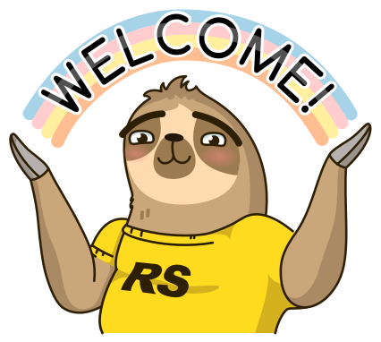
Наше обучение в цифрах
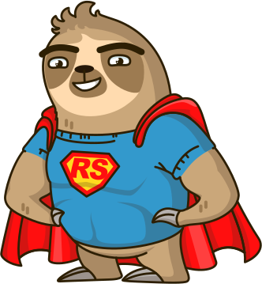
Что нам предстоит сделать?
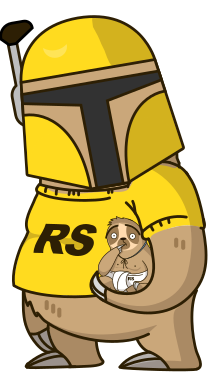
Как мне заполучить ментора?
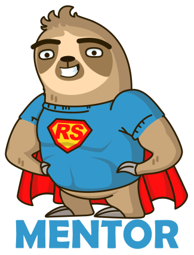
Как происходит собеседование?
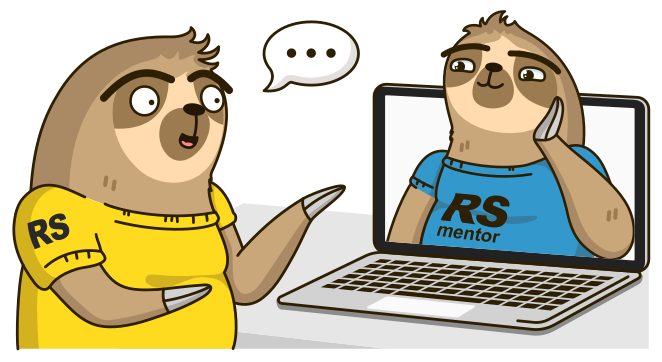
Что делать если ...
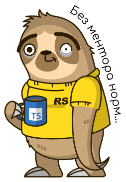
Что делает ментор во время курса?
Проверка качества кода своих студентов и, по желанию, студентов у которых нет ментора
Собеседование со студентами при формировании команды и студентами других менторов в процессе курса
Помощь студентам при выполнении заданий, проведение онлайн встреч, ответы на вопросы...
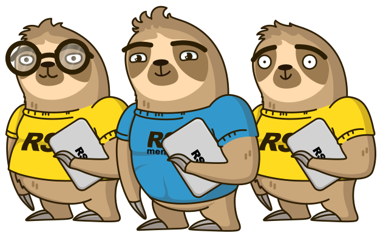
Как проходит ревью кода и на что это влияет?
Выполняется в соответствии с критериями задания и опытом ментора
Ревью проводится в течении 2-х недель после даты завершения задания
Является мотивацией получения знаний и опыта от действующего разработчика
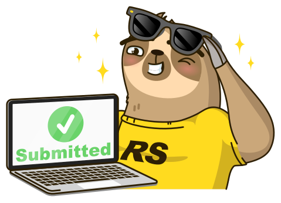
Где проходит общение?
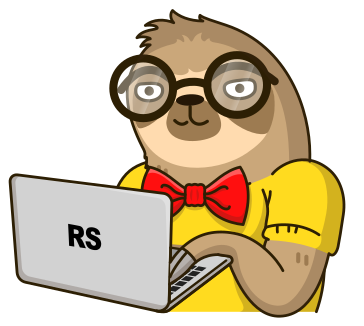
Как мне попасть на интервью?
Как происходит интервью?
Что делать если ...
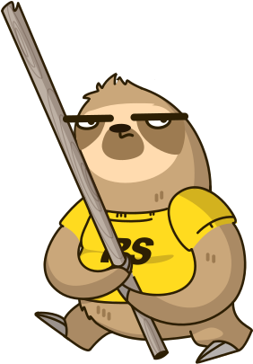
Что будет если я пропущу интервью?
Для получения итогового сертификата о завершении курса необходимо:
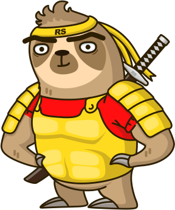
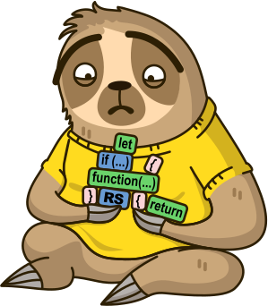
Обязательно ведем историю разработки и не делаем задания одним коммитом
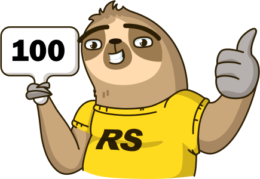
Продолжаем расширять знания:
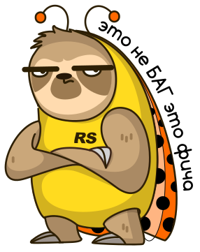
Команда курса сейчас обсуждает задание. Подробности будут позже отражены в расписании и анонсах.
Основные отличия от практических заданий:
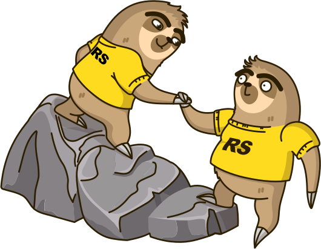